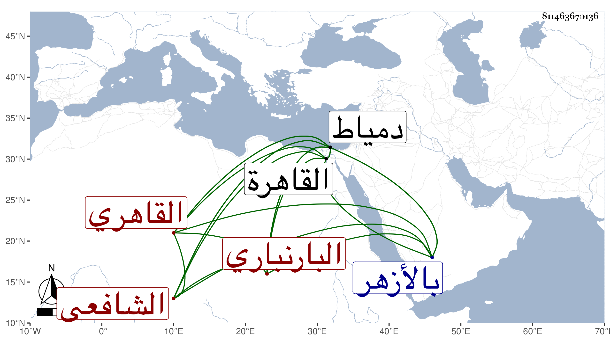

0902Sakhawi.DawLamic.ITO20230111-ara1.EIS1600.811463670136
Biography ID: 811463670136
319
محمد بن عبد الوهاب بن محمد ناصر الدين أبو عبد الله البارنباري القاهري الشافعي . ولد قبيل السبعين بيسير ببارنبار قرية بالمزاحميتين ، وقدم القاهرة فاشتغل ومهر في الفقه والعربية والفرائض والحساب والعروض وغيرها ودرس وأفتى بالجمالية العتيقة محل سكنه بالقرب من رحبة الأيدمري ، وكذا بالأزهر احتسابا ، وكان فيما بلغني يقيم بثغر دمياط نصف السنة فيقرئ العلوم بها أيضا في الجامع الزكي ويخطب بجامعها العتيق ، وانتفع به الفضلاء في البلدين وكذا في المحلة وغيرها ، وأخذ عنه غير واحد ممن لقيناه وتقي الدين بن وكيل السلطان منهم . وعمل لغزا في دمياط أجاب عنه البدر الدماميني ، وكان من خيار الناس له مدد وجلد ، وناب عن حفيد الولي العراقي في مشيخة الجمالية الجديدة تصوفا وتدريسا ثم وثب عليه الشمس البرماوي فانتزعها منه في جملة وظائف الحفيد ولبس للنيابة تشريفا في أثناء سنة سبع وعشرين ولم يرع حق صاحب الترجمة مع ظهور استحقاقه ولم يلبث أن أصيب بفالج فأبطل نصفه واستمر به موعوكا أكثر من أربع سنين إلى أن مات في ليلة الأحد حادي عشر ربيع الأول سنة اثنتين وثلاثين وقد أناف على الستين . ذكره شيخنا في إنبائه باختصار وتبعه المقريزي في عقوده رحمه الله وإيانا .
